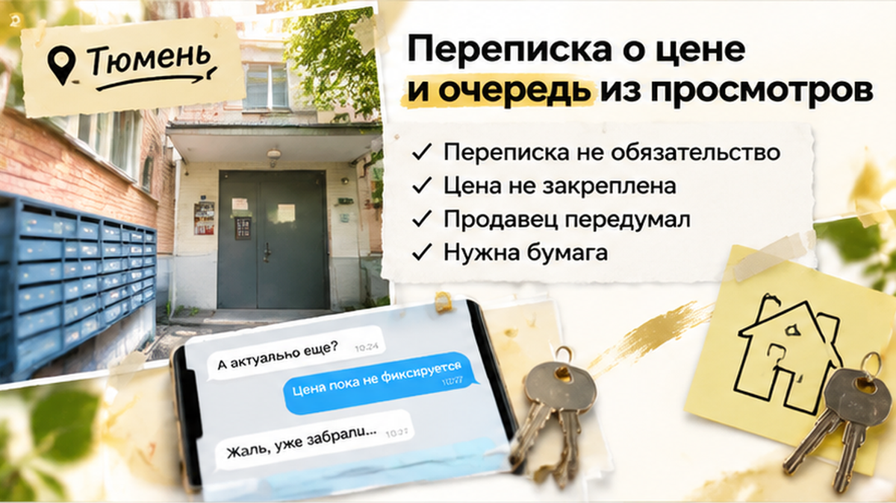
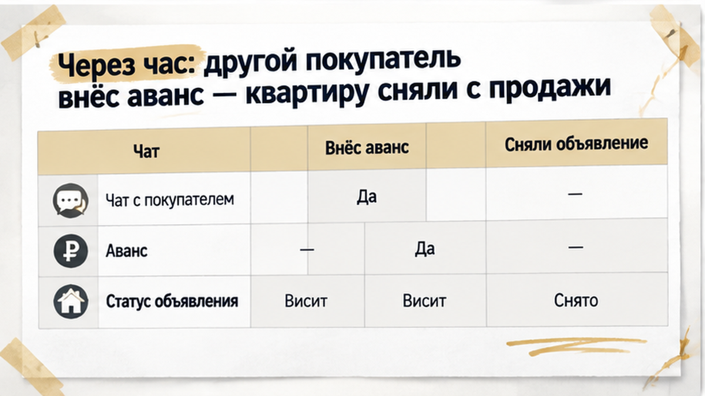
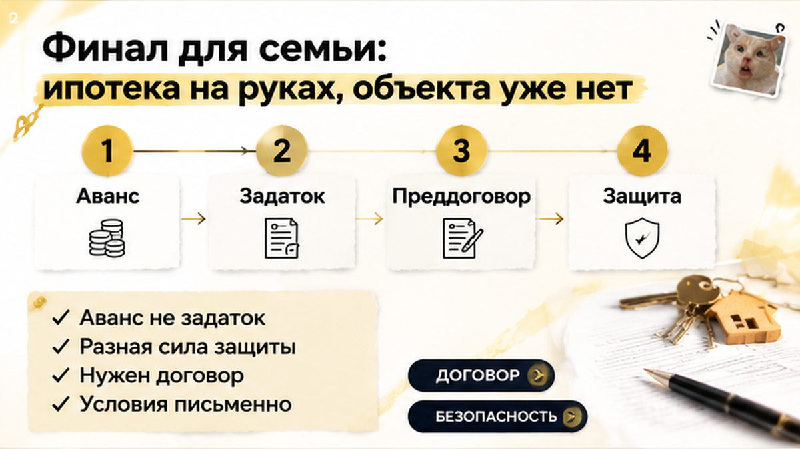
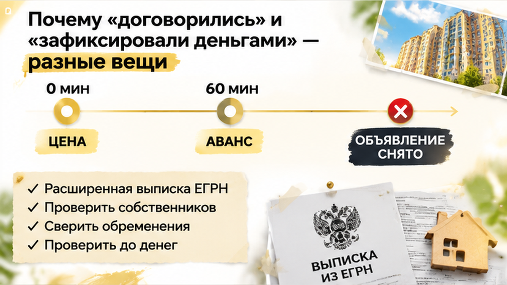
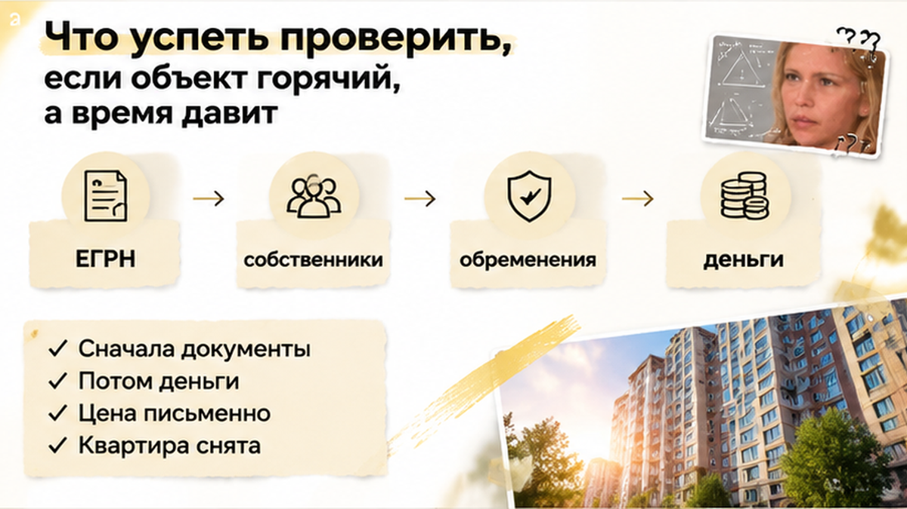

Через 1 час после того, как семья в Тюмени согласовала с продавцом цену на двушку, квартиру забрали авансом — другой покупатель успел раньше. Цену закрепили в мессенджере, продавец ответил «договорились», но объявление так и висело на сайте. Риэлтор предупреждал про очередь просмотров, семья всё равно поехала на встречу с документами. Продавец встречать уже не стал: аванс был у конкурента, и сделку остановили до ДКП.
Разбираю такие истории на вторичке в Тюмени до того, как вы отдадите деньги. Пишите в Telegram или в MAX: посмотрим вашу квартиру и условия, пока они ещё в работе.
Семья искала двушку на вторичке, и подходящий вариант попался не сразу. Конкуренция там плотная: по данным 72.ru, в августе 2026 года около 65,6% покупателей квартир в Тюмени выбрали именно вторичку, а средняя цена держалась в районе 5,1 млн рублей. Когда столько людей смотрят одно и то же, нормальная квартира по нормальной цене долго не стоит. Ипотека у семьи была уже одобрена, так что, увидев подходящий вариант, они не тянули.
Квартиру посмотрели, она устроила, с продавцом сошлись на сумме. Семье казалось, что самое трудное позади: цена есть, продавец согласен, осталось встретиться и посмотреть бумаги. Только объявление всё это время продолжало висеть на сайте. Его никто не снимал, и для всех остальных покупателей квартира по-прежнему была свободна.

Что было в той переписке на самом деле? Просто разговор, записанный буквами. Там не было ни суммы, которую покупатель передаёт продавцу, ни срока, до которого продавец обещает не продавать квартиру другим, ни подписей. Для семьи «договорились» звучало как «квартира ваша», а для продавца на горячем объекте это значило примерно «мне ваша цена подходит».
Обещания ждать именно эту семью в таком сообщении нет. Продавец ничего не подписывал и денег не получал, значит, и держать квартиру он никому не был обязан. Пока одни покупатели договариваются в мессенджере и собираются на встречу, другие в это же время едут смотреть ту же квартиру, причём уже с деньгами.

Прошёл примерно час. На квартиру приехал другой покупатель, и одними разговорами он не ограничился: сразу передал продавцу аванс. Объявление исчезло с сайта раньше, чем первая семья доехала до встречи. Продавцу выбирать было несложно. У одной семьи было только сообщение «договорились». Второй покупатель принёс деньги и был готов к сделке прямо сейчас.
Закон продавец не нарушил. Первой семье он квартиру на бумаге не обещал и денег с неё не брал. Он просто выбрал того, кто первым подкрепил слова деньгами. Похожая ловушка, когда объект уходит из-под носа, а покупатель ещё не закрепил условия, есть в истории про задаток и квартиру, которая ушла за 48 часов до торгов. Механизм там другой, а итог тот же: пока условия не записаны и деньги не переданы по документу, квартира продолжает продаваться.

Ради этой встречи семья отпрашивалась с работы, но она так и не состоялась. Продавец ответил коротко: квартира ушла, аванс уже у него, извините. Спорить было не о чем. У семьи не было ни договора, ни переданных денег, ни подписи под обязательствами. Осталась только переписка двух людей, которые друг другу понравились.
У семьи осталось одобрение ипотеки, под которое и выбирали эту двушку. Одобрение действует ограниченное время, и без квартиры от него никакого толку. Поиск пришлось начинать заново, на том же рынке, где за хороший вариант спорят несколько покупателей. По данным 72.ru, доля ипотеки на вторичке выросла с 24% до 32%. Чем больше людей с готовым одобрением смотрят одни и те же квартиры, тем быстрее «нам подходит» превращается в «уже продано».
Обиднее всего, что с самой квартирой всё было в порядке: ни долгов, ни подделок, ни обмана. Семья проиграла не мошеннику, а скорости. Тот, кто приехал позже, просто раньше закрепил сделку деньгами.
Вопрос к вам: вы бы внесли аванс в тот же день без расширенной выписки или сначала до конца проверили квартиру, даже если её могут забрать? Напишите в комментариях, как поступили бы и почему.

В обычной жизни «договорились» значит «всё решено». С квартирой это не работает. Устная цена и сообщение «да, за эту сумму отдам» не обязывают продавца ни ждать вас, ни отказывать другим. Квартира становится вашей только по договору купли-продажи (ДКП) и после регистрации. До этого есть только намерения, пока их не закрепили на бумаге.
Закрепить договорённость можно по-разному, и держат эти способы неодинаково. Предварительный договор (ст. 429 ГК РФ) обязывает стороны в срок подписать основной. Квартира от него вашей не становится, но просто передумать без последствий продавец уже не может. Задаток (ст. 380 ГК РФ) бьёт в обе стороны. Если сделку сорвал покупатель, задаток остаётся у продавца. Если сорвал продавец, он возвращает его в двойном размере. Аванс слабее всего: это просто часть оплаты вперёд, и если сделка не состоялась, его возвращают в той же сумме. Если в бумаге прямо не написано, что это задаток, закон считает деньги авансом.
Есть и обратная ловушка. Бывает, что по «предварительному» договору покупатель платит всю цену или большую её часть. Тогда суд может решить, что это уже основной договор с предоплатой: так разъясняет Пленум Верховного суда №49, пункт 23. Отдавать крупную сумму под бумагу, которая называется одним, а по сути считается другим, рискованно. Платить без договора — отдельный риск: в другой тюменской истории покупатель остался с бумагой, а не с квартирой — см. разбор про расписку без денег на счёте.
Поэтому на горячей квартире выигрывает тот, кто первым переносит слова на бумагу. Но спешить не значит платить вслепую. Если отдать аванс в тот же день без проверки, деньги семьи окажутся под тем же риском, от которого она пыталась убежать. Проверку и фиксацию нужно вести быстро и одновременно, а не выбирать что-то одно.
Разбираем такие ситуации на свежих тюменских сделках, без воды и запугивания: Telegram-канал и MAX. Если квартира горячая и решать нужно сегодня, напишите туда же, подскажем, что зафиксировать до денег.

Горячая двушка на вторичке не будет ждать неделю, пока вы спокойно соберёте бумаги. Нести деньги вслепую, лишь бы успеть, тоже нельзя. Рабочая середина такая: за несколько часов закрыть главное и только потом подписывать бумагу с суммой.
Начните с расширенной выписки из ЕГРН. В ней видно, кто собственник, сколько их и нет ли ареста или залога. Если собственников двое, а деньги берёт один, это повод остановиться. Фраза «он в курсе, просто занят» потом обходится очень дорого. Как такая проверка остановила сделку прямо перед деньгами, мы разбирали в истории про поддельное согласие супруги.
Дальше перенесите условия из переписки на бумагу. В документе должны быть цена, срок подписания договора купли-продажи, сумма, которую вы передаёте, и что будет с деньгами, если продавец передумает или банк не одобрит именно эту квартиру. Если ипотека уже одобрена, заранее спросите в банке о требованиях к объекту, иначе можно успеть с авансом и застрять на оценке. Деньги отдавайте только собственнику, названному в документе по паспорту, а не «знакомому продавца» и не на карту без бумаги. Чем кончается перевод без договора, видно по случаю, где расписку написали, а денег на счёте нет.
На показе эти слова звучат похоже, а держат продавца по-разному. Конкретный договор таблица не заменит, но разницу показывает.
| Что есть у покупателя | Держит ли продавца | Что с деньгами, если сделка сорвалась |
|---|---|---|
| Устная цена и переписка в мессенджере | Нет. Продавец вправе продать тому, кто первым принёс деньги | Денег не передавали, теряется только квартира |
| Аванс | Слабо. Это просто часть будущей оплаты | Обычно возвращается в той же сумме, без штрафа для продавца |
| Задаток (ст. 380 ГК) | Сильнее. Сорвал продавец, значит возвращает двойную сумму. Сорвал покупатель, значит задаток остаётся у продавца | Работает, только если оформлен письменно и прямо назван задатком |
| Предварительный договор (ст. 429 ГК) | Обязывает подписать основной договор в срок и на указанных условиях | Собственником вы не становитесь. Если почти всю цену заплатили заранее, суд может посчитать это основным договором с предоплатой (Пленум ВС №49, п. 23) |
Отказ от аванса продавцу почти ничего не стоит. Поэтому на горячем объекте письменный задаток с понятным сроком обычно надёжнее.
Вторичку не нужно бояться, и проверку не нужно растягивать на неделю. Подошла квартира на показе, значит в тот же день заказываете выписку, сверяете собственников и подписываете задаток с условиями на бумаге. Это часы, а не дни. И тогда звонок после согласования цены будет уже не «квартиру забрали», а «завтра подписываем договор».
Разбираю реальные сделки на вторичке и в новостройках Тюмени, без воды и с документами на руках. Подписывайтесь: Telegram и MAX. Другие истории и разборы есть на сайте. Нашли квартиру и боитесь не успеть? Позвоните до того, как переводить деньги: +7 922 001 65 05, Святослав.